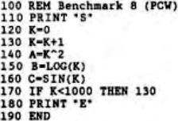

Scorpio News |
January–March 1987 – Volume 1. Issue 1. |
| Page 57 of 63 |
|---|
A few years ago, PCW published a series of Benchmark programs in BASIC, together with a list of micros on which they had been run; these were arranged in order on the basis of their average performance on 8 programes which were designed to test various features of their machines’ version of BASIC. No Nascom or Gemini Nasbus/80-BUS machines were tested although one machine was designed by Gemini (Mimi 801, which did quite well in the tests).
The benchmarks were structured so that for tests 2 – 7, subtracting the timing for the previous test from the current test time would give the time due to the routine under examination. The eighth benchmark differed from the rest, which tested the timings for arithmetic functions, GOSUBs and array handling since it dealt with transcendental functions such as SIN, LOG and exponents:

I tried this one on the following machines (CPU and system clock frequency in brackets)
| UK101 | (6502 , 1MHz) | 72.1 secs | |
| BBC B | (6502, 2MHz) | 51.3 secs | |
| Nascom 2 | (Z80, 4MHz no FDC) | 50.1 secs | |
| $ | BBC + TORCH Z80 2nd processor | 30.8 secs | |
| * | Nascom 3 | (Z80, 4MHz) | 53.0 secs |
| * | Gemini MultiBoard ( " ) | 52.2 secs | |
| * | MAP-80 Systems ( " ) | 51.9 secs | |
| + | MAP-80 Systems ( " ) | 50.8 secs | |
| $ | Using Z80 BBC BASIC and CP/M | ||
| * | Using MBASIC and CP/M 2.2 | ||
| + | Using MBASIC and CP/M 3.0 (CP/M Plus) | ||
I then found that the timing for the standard BBC was 5.1 seconds according to PCW! Evidently their Beeb was supercharged! More likely, line 170 of the program had been amended to ‘IF K<100 THEN 130’ since the average value of 14.6 over the 8 tests was based on a timing of 51 seconde for no. 8. Colleagues who have run this test on other machines mentioned in the PCW list have also commented upon inaccuracies in the reported speeds. The Z80 version of BBC BASIC as used on the TORCH second processor war extremely fast but disk access with this system is dreadfully slow. I did not have access to the Acorn 6502 or Z80 second processors – it would have been interesting to see their timings.
More recently, a series of Benchmarks in Pascal was produced by the same magazine; these were 15 in number and designed to take account of the greater range of features found in this language, but the overall philosophy was the same, namely, by subtracting the timing for the previous test from the current test time, some idea could be gained of the time for the routine under investigation. I was able to test COMPAS v. 1.08, HP4 and ProPascal v. 2.1 using CP/M 2.2 and CP/M Plus and came to the conclusion that for BM15, which was a Pascal version of the BM8 BASIC version, HP4 was quite a lot faster than COMPAS, possibly because it uses 7 rather than 11 significant figure accuracy. The results were at follows:
| Page 57 of 63 |
|---|